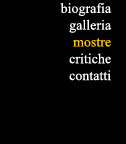

1947 - 1953 | 1953 - 1956 | 1956 - 1959 | 1959 - 1961
1947
- Agosto
Diano Marina, Hotel ParadisoI Mostra del Paesaggio ItalianoAzienda Autonoma
di Soggiorno
1948
- Agosto
Diano Marina, Palazzo MaglioneII Mostra del Paesaggio ItalianoAzienda
Autonoma di Soggiorno
1949
- 8 Agosto/ Settembre
Diano Marina, Palazzo ComunaleIII Mostra del Paesaggio ItalianoAzienda
Autonoma di Soggiorno
1950
- 6/18 Settembre
Napoli, Galleria d'Arte "Il Parnaso"Mostra Nazionale d'Arte
Piedigrotta
1950
Galleria d'Arte "Il Parnaso"1951 - 18/31 AgostoImperia, Ridotto
del Teatro CavourCuori sulla tavolozza. Mostra d'ArteCircolo Libertas
1951 - 16/23 Settembre
Diano Marina, Palazzo MaglioneMostra d'Arte Contemporanea
1952 - Gennaio
Bordighera, Fiera del FioreI Mostra di Pittura FemminileCittà di Bordighera
1952 - Aprile (?)
Torino, Via Roma"L'Arte in Vetrina" II Mostra NazionaleEnte Provinciale TurismoAssociazione Commercianti
1952 - 17/27 Maggio
Sanremo, Salone Spettacoli Casinò Munici?Pale I-Mostra d'ArteSindacato Provinciale Belle Arti
1952 - 26 Luglio/9 Agosto
Bordighera, Le Cinque BettoleComune di Bordighera
1952 - 31 Luglio/20 Agosto
Diano Marina, Palazzo MaglioneI Mostra Sindacale Provinciale d'Arte U.I.L.Sindacato Provinciale Belle Arti
1953 - Gennaio
BardonecchiaVII Raduno dei pittori a Bardonecchia